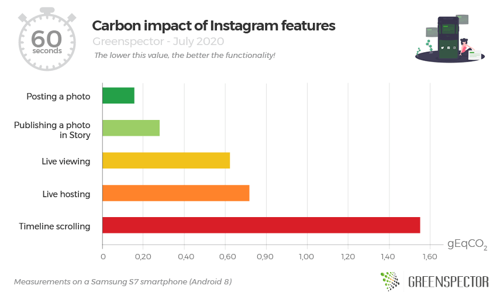
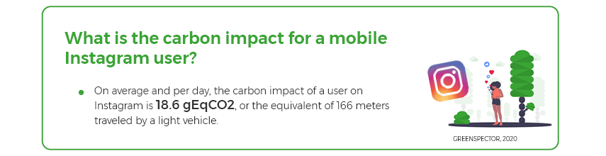
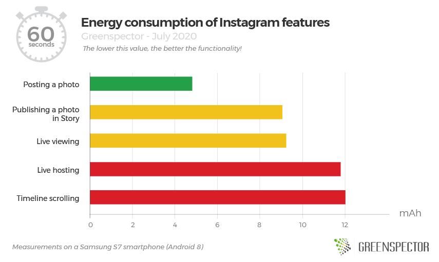
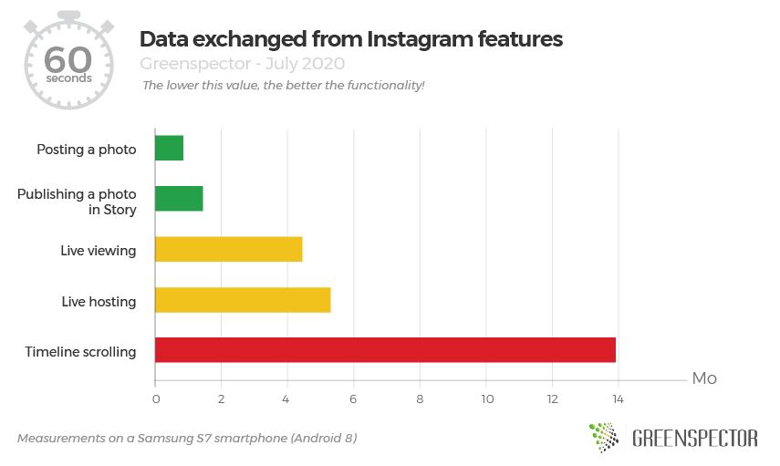

Have you ever wondered what the environmental cost of a post, a story, watching a live or Instagram feed?
The application launched in 2010 has 1 billion monthly active users (Source) including 28 million unique visitors per month. In France, there are 11 million unique visitors per day. Instagram is the most frequented social network behind Facebook.
For this study, we chose to measure the carbon impact, energy consumption, and data on 5 user journeys on the Instagram mobile application (version 148.0.0.33.121):
- The publication of a photo in story
- The publication of a photo with filter and description in profile
- Viewing a live Instagram
- Hosting a live Instagram
- Scrolling the news feed
The carbon impact of Instagram features per 1 minute unit of time

The feature that has the least impact on the environment over one minute is the photo publication (0.154 gEqCO2), this is the carbon equivalent of 1.3 meters made by a light vehicle/minute. This feature consumes 10 times less than the most impactful of our measures.
The most impactful feature over one minute is that of the scrolling of the newsfeed (1.549 gEqCO2). Over one minute, it is the equivalent of 13 meters done in a light vehicle. Composed of photos, videos, and advertisements (for an active account), the functionality does not consume the most energy (see following graphs), but in terms of the data exchanged, it is the one that displays the highest value (14.63 MB for one minute).
Regarding the Live feature, whether it is on the viewer or host side, the impact is almost the same (13% less for the viewer). The energy consumption is similar, however, the spectator part exchanges fewer data.
If we consider that the average carbon impact of Instagram is 0.664 gEqCO2 / minute (unweighted average of these 5 uses) and that its users spend an average of 28 minutes / day on the social network (Source). So the average impact of a user on Instagram is 18.6 gEqCO2 / day, the equivalent of 166 meters traveled by a light vehicle.

Energy consumption of Instagram features for 1 minute

Posting a photo on your Instagram account consumes 1.8 times less energy than posting a photo as a Story (reduced to a one-minute user journey) and 2.4 times less than hosting a Live. The live features are very consuming here since it is a continuous video stream.
Data exchanged from Instagram features for 1 minute

The association of photos, videos and advertisements of the newsfeed feature greatly impacts its data exchange since it has to load new elements when scrolling. It also consumes 2.6 times more data than hosting a live and 16 times more than publishing a photo (user journeys reduced to one minute of use) /
Methodology
The application is measured on an S7 smartphone (Android 8), the user scenarios were carried out through our GREENSPECTOR Test Runner, allowing the performance of automated tests.
Each measurement is the average of 3 homogeneous measurements (with a low standard deviation). The consumption measured on the given smartphone according to a Wi-Fi type network can be different on a laptop PC with a wired network for example.
To assess the impacts of infrastructure (datacenter, network) in the carbon projection calculations, we relied on the OneByte methodology based on real data measured on the volume of data exchanged. This assessment methodology takes into account the consumption of resources and energy in use for the requested equipment. As this is a very macroscopic approach, it is subject to uncertainty and could be fine-tuned to adapt to a context, to a given tool. For the Carbon projection, we assumed a 50% projection via a wifi network and 50% via a mobile network.
To assess the impacts of mobile phones in the carbon projection calculations, we measure the energy consumption of the user scenario on a real device and in order to integrate the material impact share, we rely on the theoretical wear rate generated by the user scenario on the battery, the first wearing part of a smartphone. 500 full charge and discharge cycles therefore cause a change of smartphone in our model.
For those who like numbers
| Use case | Energy consumption (mAh) | Exchanged data (MB) | Memory consumption (MB) | Test time (second) | Carbon impact (gEqCO2) per minute | Equivalence in meters of average car in France / minute |
| Create Stories | 3,32 | 0,522 | 410 | 22 | 0,277 | 2,47 |
| Publish a photo on your feed | 4,75 | 0,806 | 425 | 59 | 0,154 | 1,37 |
| Timeline scrolling | 9,7 | 14,63 | 460 | 63 | 1,549 | 13,83 |
| Hosting a live | 23,84 | 10,55 | 447 | 119 | 0,716 | 6,39 |
| Live viewing | 23,39 | 8,78 | 522 | 119 | 0,622 | 5,55 |